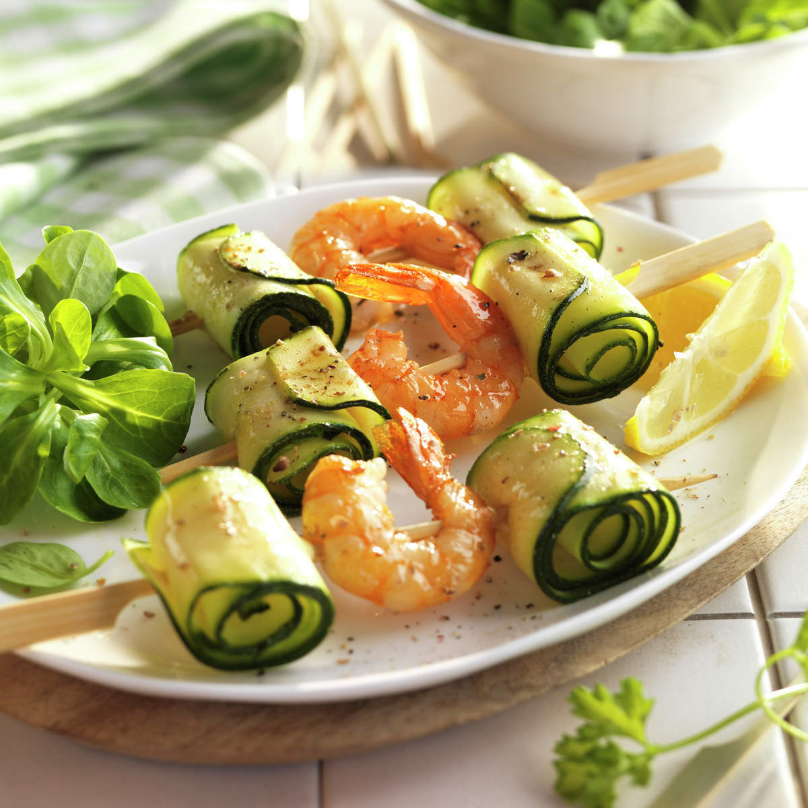

Home
Zuchini and Prawn Skewers

This recipe is perfect for these hot summer days
Ingredients
- 12 praws
- 2 zuchinis
- 100g lamb's lettuce
- Olive oil
- Salt
- Pepper
Steps
- Wash the zucchinis, trim the ends, and slice them lengthwise using a mandoline.
- Remove the heads and shells from the prawns. Soak the skewers in water and wash the lamb’s lettuce.
- Assemble the skewers by alternating rolled zucchini slices with prawns. Season with salt and pepper, then brush with a little olive oil.
- Grill the skewers on a hot griddle for about 2 minutes on each side.
- Transfer them to plates and drizzle with the juice of half a lemon. Serve with lemon wedges and lamb’s lettuce.